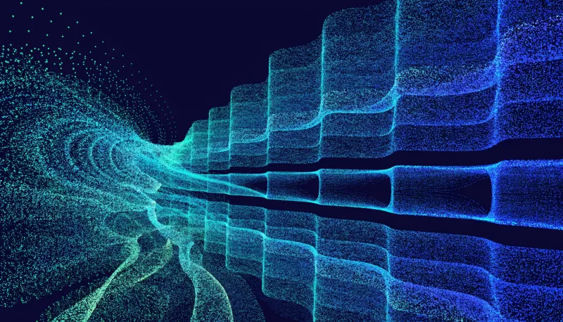
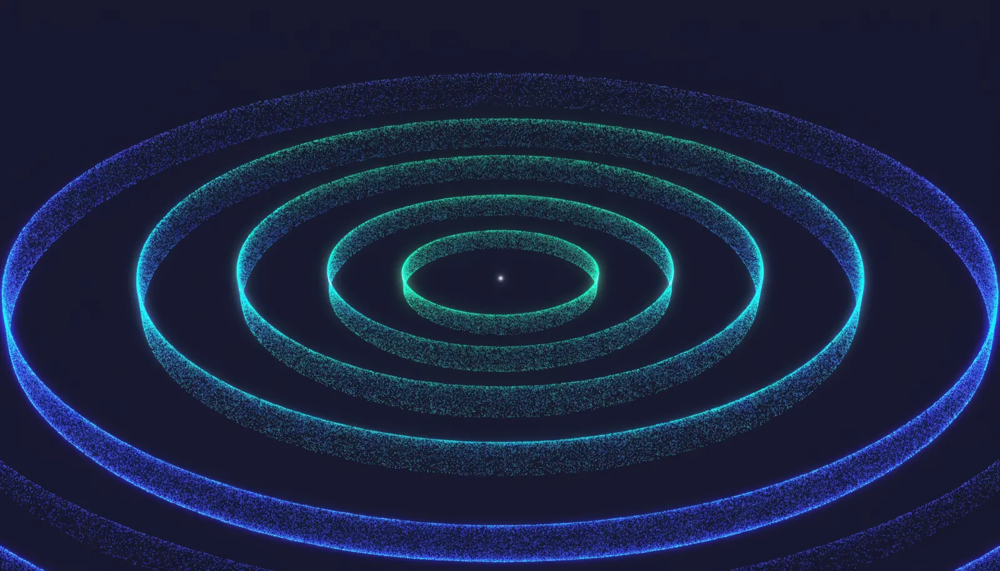

Punto de venta y caja
- Cobro con corte por turno y por método de pago
- Gastos cotidianos y retiros de seguridad con autoridad escalonada
- Reconteo, cierre con diferencia e incidencias por severidad
- Conciliación separada por método
Operación con agentes de IA
El 95% de los pilotos de inteligencia artificial nunca sale del piloto. Orvin diseña, construye y opera el sistema que hace funcionar tu negocio, con evidencia auditable en cada paso — y lo prueba operando sus propios negocios.
Hoy cualquiera arma una demo en una tarde. Por eso pasamos de 2,000 a más de 12,000 agencias de automatización con IA en dos años. Lo que casi nadie hace es sostener el sistema cuando entra a la operación real, con dinero, personas y errores de verdad.
de los pilotos de IA generativa nunca llega a producción ni entrega resultados medibles.
MIT, State of AI in Businessde las empresas abandonaron la mayoría de sus iniciativas de IA durante el último año.
Reportes de adopción 2025–2026de los proyectos de IA fracasan: el doble que un proyecto de tecnología convencional.
RAND CorporationTodos venden el arranque. Casi nadie vende la permanencia.
No es un catálogo de lo que podríamos hacer. Es lo que hoy está corriendo, cobrando y registrando movimientos reales todos los días.
Además: cobro en línea con marca propia, sitios y agentes de venta desplegados, chat web multiagente, y producción audiovisual con IA. Cada pieza vive en su propio entorno aislado, con versión identificable y reversión disponible.
No todo empieza con un sistema completo. La mayoría de los negocios arranca con un agente que hace una sola cosa muy bien — y que se entrega en semanas, no en meses.

Disponible↑ Las tres piezas de arriba las generó un agente Orvin mientras armábamos esta página.
Hay dos formas de comprar IA hoy, y las dos dejan al negocio expuesto. Orvin es una tercera.
| Plataformas de agentes | Agencias de automatización | Orvin | |
|---|---|---|---|
| Qué venden | Volumen de conversaciones resueltas | Un entregable: el flujo construido | La operación del sistema, con responsabilidad continua |
| Precio | Oculto. Contrato anual y cuota de arranque de seis cifras | Inventado por cliente, sin base de costo | Rango público, con margen declarado |
| Quién responde | Soporte por ticket | Nadie después del cierre | Orvin opera, monitorea y corrige |
| Prueba de que sirve | Métricas del propio proveedor | Demos y promesas de retorno | Sistema de registro externo o cálculo reproducible |
| Tus datos | En su nube, mezclados | Donde haya quedado la integración | Entorno aislado por cliente, con retención y borrado definidos |
| Si falla | Sigues pagando el contrato | Costo de rehacerlo | Reversión prevista desde antes de empezar |
Vendemos lo mismo que usamos para cobrar dinero real todos los días.
Cuatro etapas con puertas explícitas. Ninguna avanza sin evidencia, y cada una declara desde el inicio en qué condiciones se detiene y cómo se revierte.
Un proceso, un responsable, un resultado medible. Definimos la fuente de verdad y el criterio de aceptación antes de escribir una línea.
Sin costoAlcance, riesgos, límites de gasto y condiciones de parada por escrito. Tú apruebas antes de que construyamos.
Puerta 1El sistema se levanta en su propio entorno aislado, con datos reales y pruebas de aislamiento, presupuesto y reversión.
Puerta 2Liberación acompañada y operación continua: monitoreo, correcciones y mejoras. Aquí es donde mueren los demás proyectos.
Puerta 3
Si no llega a producción, no se cobra.
Cada sistema que operamos alimenta el mismo motor. Ese motor se convierte en el producto donde cualquier negocio podrá operar sus propios agentes.
El centro de mando de tus agentes: consultas tu operación, conversas con ellos, recibes entregables y apruebas lo delicado — sin tener que entender nada de la infraestructura que hay debajo.
Es la superficie de todo lo que ya operamos hoy por separado, en un solo lugar.
Empieza por el diagnóstico
Una conversación de 45 minutos sobre el proceso que más te duele. Sales con un diagnóstico escrito: qué se puede automatizar, qué no conviene, y qué costaría. Sin costo y sin compromiso.